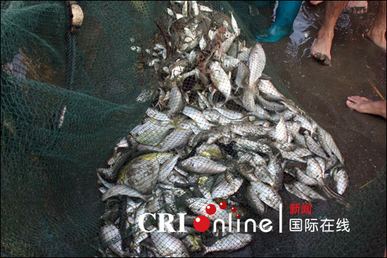
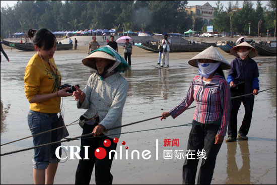
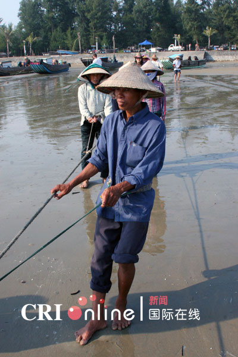

京族是我国唯一以海洋渔业经济为主的少数民族，拉大网是经族人民在长期的生产实践中总结出了拉大网捕鱼的生产方式。大网长达1000多米，重达数百公斤，每张网价值1万多元，是由村里各家各户出资购买的。拉大网时，要30多人抬网到海边，由网头带头乘船沿距海边70多米远的地方沿沙滩岸线放开，由滩边向海面围成一个半月形的大圈。收网的时候，人们分成两组，各执渔网一头，一边拉网一边靠拢，直到网尽鱼起。一网一般能打几百至上千斤鱼，主要是大小黄鱼、马交鱼等，在七八十年代，曾经有一网打1万多斤鱼的壮举。
有趣的是，拉网的过程游客是可以参与的，好客的渔民们既可带你撒网，又可安排你拉网，如果游客不怕辛苦而能坚持，不用半天功夫大网就能拉上滩了。倘若将拉网进行到底，按照京族见者有份的古俗，还有机会分享一份美味的海鲜。